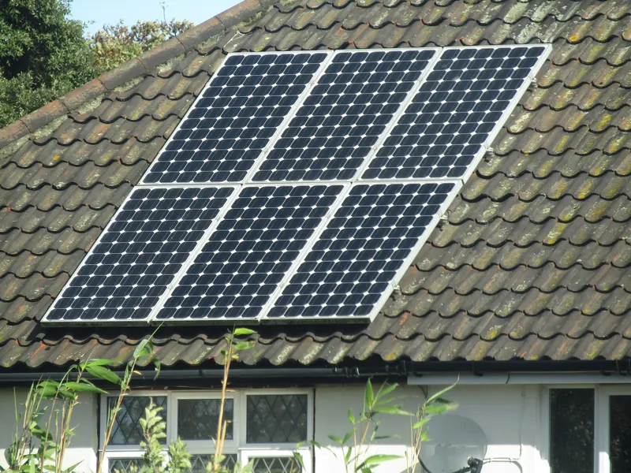
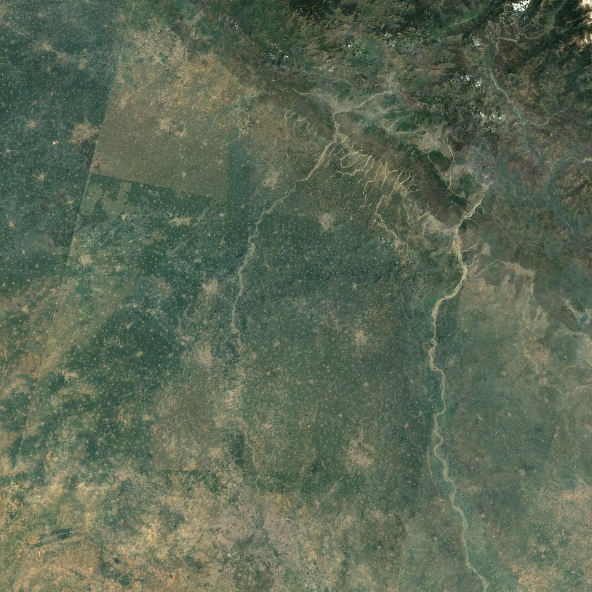
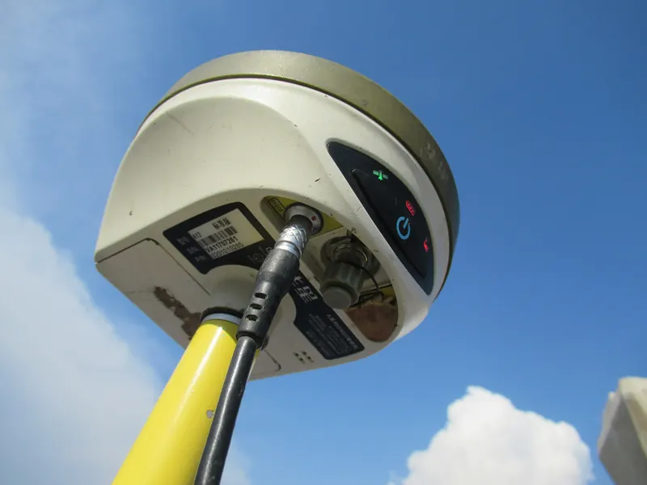
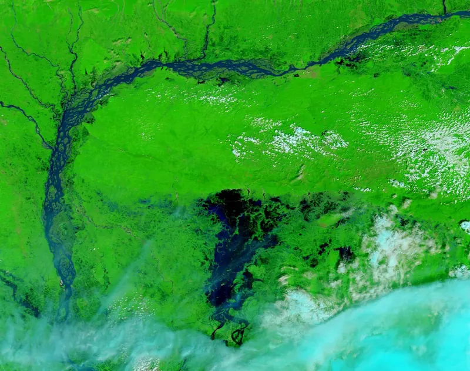

SolarSight: rooftop solar checks for Indian homes
A free tool that works out how much solar a rooftop can take. Enter your location, answer a few questions about your roof, and get a 7-page PDF report in under 2 minutes.
Read more
01 / Home
GIS Engineer · Python Developer · Location Technology Enthusiast
I'm a GIS engineer at Survey of India, where I process GNSS data from 1023+ reference stations. I write the Python scripts that handle the slow, repetitive parts of that work. Before this, I worked on LiDAR and flood mapping at DRDO.

DelhiNSUT · 2021–25 ChandigarhDRDO · 2024 DehradunSurvey of India · 2025– 77°E 78°E 30°N 29°N01.1

A free tool that works out how much solar a rooftop can take. Enter your location, answer a few questions about your roof, and get a 7-page PDF report in under 2 minutes.
Read more

Python scripts that download and prepare GNSS data from 1023+ reference stations. The data is then processed in GAMIT/GLOBK and PRIDE PPP-AR to centimeter-level accuracy.
Read more

Mapping the areas that flood above a 1 m sea level rise, using terrain, elevation and drainage layers in QGIS.
Read more
01.2
The kinds of work I take on.
Spatial analysis in ArcGIS Pro and QGIS, backed by PostGIS. I've used it for infrastructure planning, flood risk and land use maps.
ArcGIS · QGIS · PostGIS · GeoServer
High-precision positioning with GAMIT/GLOBK and PRIDE PPP-AR. I batch-process 365-day datasets from 1023+ CORS stations to cm-level accuracy.
GAMIT/GLOBK · PPP-AR · RINEX · Python
Scripts that save 12 hours of manual processing a week, and ETL pipelines built with ArcPy, GeoPandas, Rasterio and GDAL.
Python · ArcPy · GeoPandas · Rasterio · GDAL
LiDAR point clouds of 3M+ points and hyperspectral images. Also drone mapping, DEMs and environmental monitoring from satellite data.
LiDAR · laspy · ENVI · Google Earth Engine